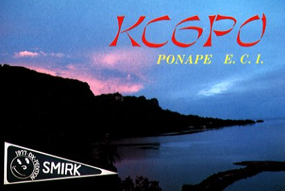
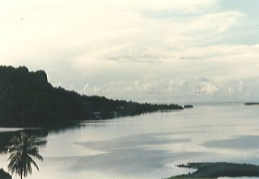
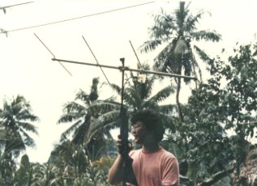
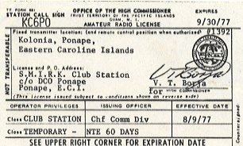
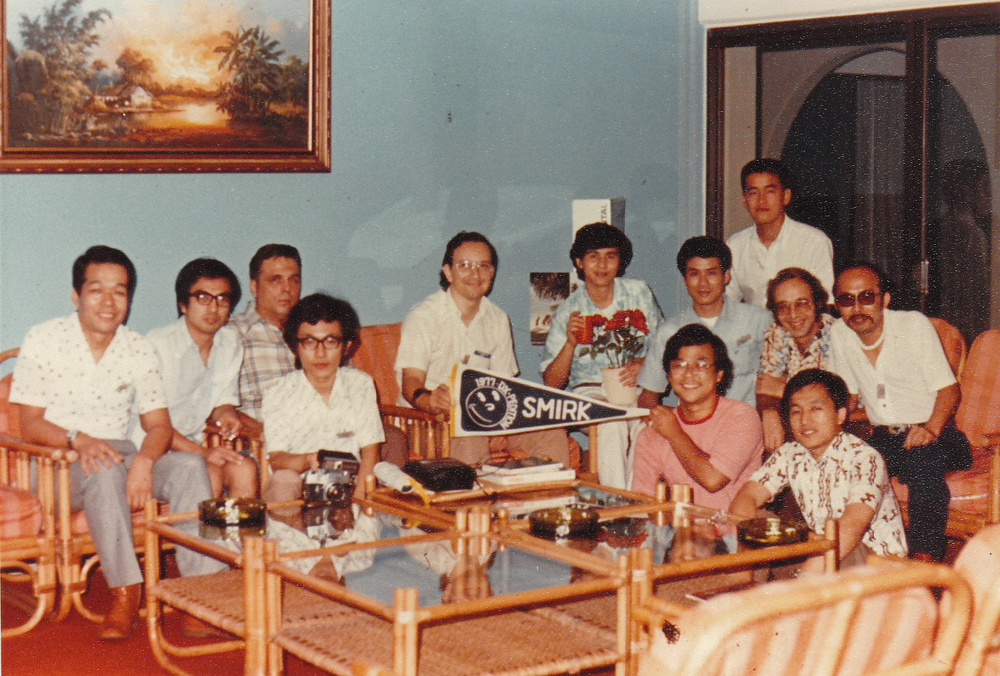
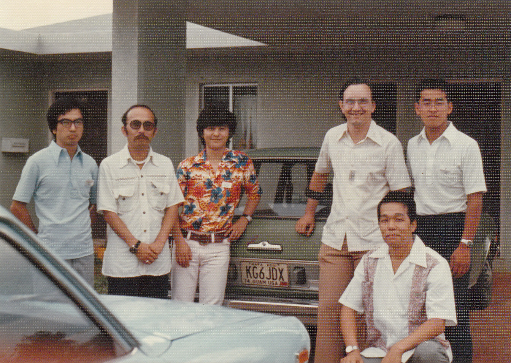
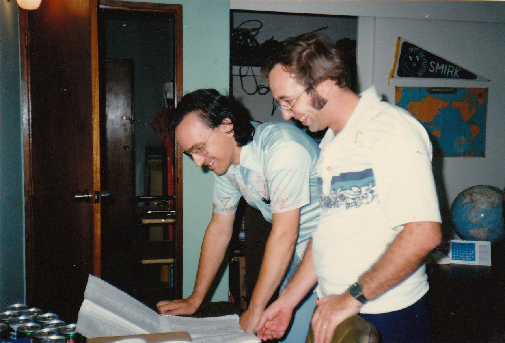
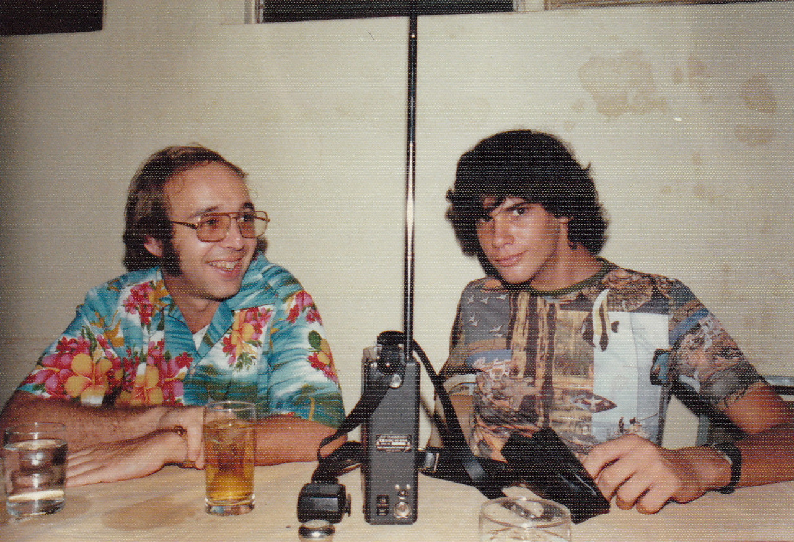

|
1977年9月4日から9月14日までSMIRK(Six Meter International Radio Klub)の日本メンバーによるKC6PO (Ponape E.C.I)のDX-Pediが行なわれました。
期間中、コンデションにも恵まれ日本からも多くの局がQSOに成功しました。 9月3日の朝、羽田空港を出発、グアム(Guam)島経由でポナペ(Ponape)島に向かった一行は、翌4日に現地に到着。 18:00LMT(16:00JST=時差2時間)からさっそく6mのビーコンを発射しました。 初日はDXのオープニングはなく、23:00LMT(21:00JST)にこの日の運用を終了しました。 翌5日は、06:00LMTからビーコンを運用。19:28LMTにこのビーコンを聞きつけて呼んできたJA5NJOがKC6POの初QSOとなりました。 この日はこのQSOだけでコンデションは落ちてしまいました。 6日は18:33LMTのJA2GHTとのQSOをかわきりにJA2を中心にFBなオープニングがあり、JA2、3、5、6など13局とQSOに成功しました。 翌7日は、6エリアにオープン、17:50LMTのJH6BPGのQSOを初めとして7局とQSO出来ました。 オープンは地域的に限られた狭い範囲の入感で、コンデションも急激に変化する不安定な状態でした。 9日も弱い信号ながら再び入感、17:56LMT(15:56JST)のJA1LZKとのQSOを初めとして27局とQSO出来ました。 この日は27局のJAの他にグアム島のKG6JIH、KG6DX、KG6APP、サイパン(Saipan)島のKG6ROともQSO出来ました。 続く10日は、今回のDX-Pedi期間中最もコンデションがFBで、16:24LMTのJR6AUVのQSO開始から19:44LMTのJH7KLEまでのオープンし、 この日だけで90局とQSOしました。 またこの日はKC6POの他に、ポナペ在住のKC6CWも同時に運用、JA2の3局がこの局ともQSOしています。 当初、ポナペ島からの運用は9月10日までの予定でしたが、運用期間が平日だけになってしまうことから、 9月14日まで延長して運用することになりました。 残念ながら延長したこの期間にはバンドはオープンせず、皮肉な結果となってしまいました。 今回のDX-Pedi期間中のJA-KC6間のオープン確率は約50％で、9月初旬の太平洋方面に対するオープンの確率はかなり高い事を証明しました。 6mのDX-QSOでは"DXを聞く耳"を持った局がお互いに意識を向け合って"その気"になってワッチすることが必要なのです。
 ポナペ島（現在のV63） 【KC6PO運用記録】
（時間は全てUTC）
9月4日
ビーコン 07:00〜12:00z
QSOなし。
9月5日
ビーコン 19:00〜09:30z
00:04zにKG6DXのビーコンを受信。 08:28zにJA5NJOとQSO。
9月6日
ビーコン 00:00〜11:00z
07:33〜08:02zの間、JA2GHTなど13局とQSO。
9月7日
ビーコン 21:00〜11:00z
06:50〜07:09zの間、JH6BPGなど7局とQSO。
9月8日
ビーコン 21:00〜08:45z
08:00zに“6R”(KG6RO?)を受信。
9月9日
ビーコン 22:00〜11:30z
KH6向けに02:00〜04:00z
06:25zにKG6ROを受信、06:48zにQSO。
06:56zのJA1LZKから、KG6JIH、KG6DX、KG6APPなど、31局とQSO。
08:11zにHL9WIを受信。
9月10日
ビーコン 22:00z〜
KH6向けに01:30〜02:00z、VK向けに02:00〜02:45、04:20〜05:00z。
05:24zのJR6AUVから、KG6JDXを含む90局とQSO。
9月11日
ビーコン 04:30〜08:35z
9月12日
ビーコン 21:00〜09:00z
9月13日
ビーコン 20:45〜23:45z
04:40〜08:00zまでKC6CWから、ビーコン発射。
9月14日
ビーコン 22:30〜00:00z QRT。
 サテライト通信にトライするKC6PO JA1 42 JA2 45 JA3 20 JA4 3 JA5 2 JA6 13 JA7 5 JA8 0 JA9 2 JA0 3 JA以外 7（Guam 4、Saipan 1、Ponape 1、/MM 1）  クラブ局としてSMIRKにKC6POが免許された 【GUAMでSMIRKの親睦会】 今回のポナペ島からのDX-Pedi運用には、同時にGuam(KG6＝現KH2)のSMIRKのメンバーと親睦をはかる目的も含まれていました。 日本からの参加局はJA1LZK、JA1NVG、JA1QYU、JA1RJU、JR1SQU、JE1HYR、JI1HHXと、 SMIRKのメンバー外からJH1FZZ、JR1FRDの計9名。 Guamでの親睦会には地元からKG6DX、KG6JDX、KG6JIHのメンバーの他、 マリアナクラブのメンバーが多数参加しました。 尚、ポナペでのKC6POの運用はJR1SQU、JE1HYR、JH1FZZ、JR1FRDの各局が担当。 【 JA1RJU 小笠原 一夫 】 |



